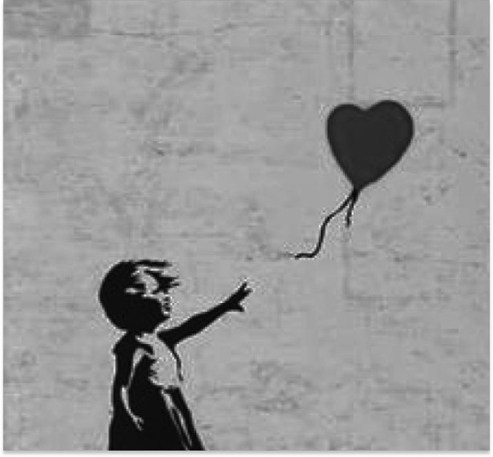
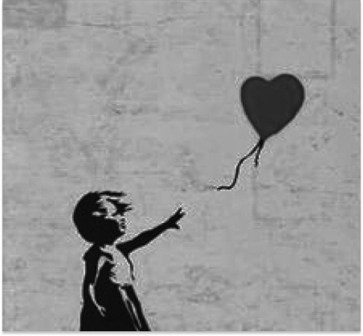

IN
PARADISE
 

I
n October 2018, during an auction, Banksy activated a
shredder hidden in the frame of "Girl with a
Balloon" just as it sold for £1,042,000. The artwork
was partially destroyed in a dramatic performance that
left
spectators stunned. People reacted with
phrases like "we've been Banksy-ed." This act
was widely interpreted as a critique of the
commodification of art and the fleeting nature of the
commercial art market.
Ironically, most people
believed that the performance only increased the
artwork's value. Banksy was the first in art history
to realize such an audacious idea. The buyer of the
partially shredded piece chose to keep it, stating that it
was a moment that would go down in art history and
expressed delight in owning it.
The day after the
shredding, Banksy posted on his social media
The day after the shredding, Banksy posted on his social media quoting Pablo Picasso:

He is a British painter, graffiti artist, social activist, and film director, whose identity remains unknown. He refers to himself as an "art terrorist." According to a KBS video, little is known about his personal information. His true identity is kept a secret, and his works, which appear in various urban locations, have significantly raised public awareness of street art.

Exit Through the Gift Shop
Flower Thrower
Flying
Copper
Chasing the Dream
Forgive Us Our
Trespassing
Fragile Silence
Game Changer
Glory
Gorilla
in a Pink Mask
Guard Dog with Balloon Animal
Hula
Hooping Girl
You Can’t Get It Without the Mask
Kissing
Coppers
He is a British painter, graffiti artist, social activist,
and film director, whose identity remains unknown. He refers
to himself as an "art terrorist." According to a KBS
video, little is known about his personal information. His
true identity is kept a secret, and his works, which appear
in various urban locations, have significantly raised public
awareness of street art. Banksy's works address various
political, social, and artistic issues, delivering unique
perspectives and messages.
He never reveals his face
and creates art in secret, disappearing before anyone
notices. Only a select few have ever met him, primarily
through interviews. His artworks are officially recognized
as his only when they are unveiled on his website.